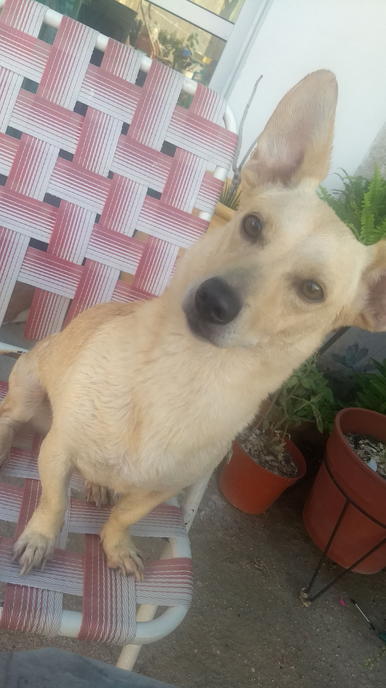
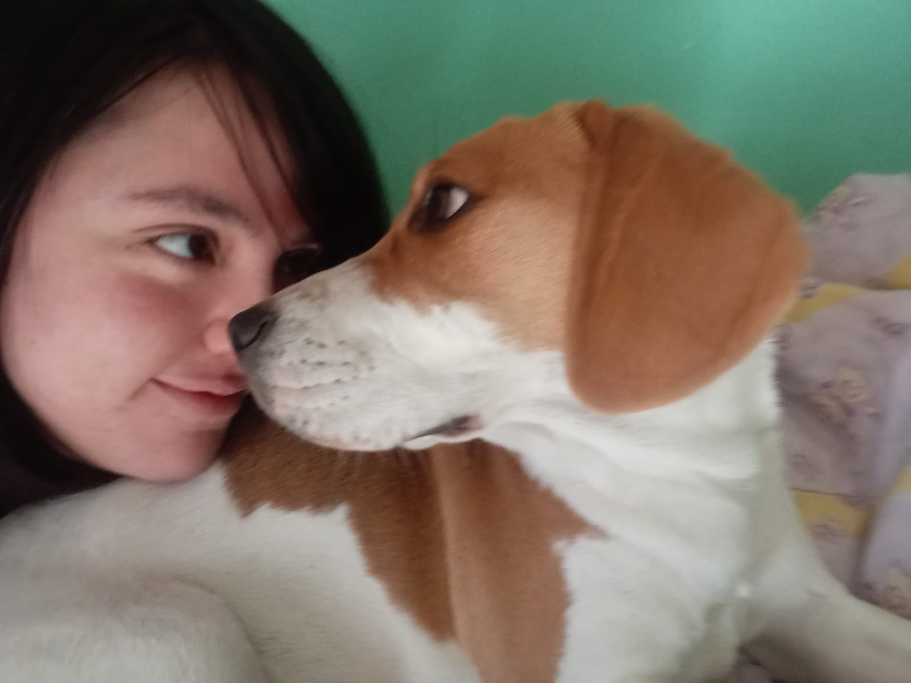

En un soleado día de primavera en octubre, llegó a nuestras vidas un compañero peludo que llenaría nuestra casa de risas y amor. Este es Bengie, un beagle con un apetito insaciable, una pasión por la siesta y una aversión inquebrantable por el agua. Bengie, desde el principio, dejó claro que la comida era su mayor alegría en la vida. Sus ojitos tiernos y su nariz sensible le hacían el detective perfecto cuando se trataba de buscar sobras en la cocina. Los aperitivos, las golosinas y las cenas se convirtieron en sus momentos más felices, y su habilidad para encontrar comida era impresionante. Puede dormir en prácticamente cualquier lugar cómodo de la casa. Su ronquido potente y su expresión tranquila mientras duerme nos recuerdan constantemente la importancia de tomarse un descanso.
A veces, las mejores historias de amor comienzan de manera casual, y Luna, nuestra perrita sin raza, es un testimonio de ello. Luna llegó a nosotros de manera casual, pero pronto demostró que su lugar estaba destinado a ser en nuestros corazones. Luna mostró desde el principio que era una perrita excepcionalmente obediente. Su cola siempre se agitaba de felicidad cada vez que la elogiábamos por su buen comportamiento. Luna demostró que no se necesita ser de raza para ser un compañero leal y obediente. Una de las sorpresas más encantadoras de Luna fue su amor por las verduras. Desde las zanahorias crujientes hasta los guisantes tiernos, devoraba estas delicias saludables con entusiasmo. Su juguete favorito, una simple pelota, la hacía saltar de emoción. Pasábamos horas jugando en el jardín, lanzándole la pelota una y otra vez mientras Luna corría felizmente para atraparla.
Un regalo sorpresa que nos llenó de alegría desde el primer momento en que la vimos. Con sus orejas caídas y ojos chispeantes, supimos que estábamos destinados a ser su familia para siempre. Al igual que Luna, Sol tenía una obsesión irresistible por su pelota. Desde el momento en que la vio por primera vez, su cola comenzó a moverse como un metrónomo alegre. Jugábamos con ella en el jardín, lanzando la pelota una y otra vez, y Sol corría tras ella con una determinación y alegría que solo los cachorros pueden expresar. Devora cualquier alimento que se le pusiera delante, desde croquetas hasta restos de cena. Su apetito voraz a veces nos dejaba asombrados, pero era imposible resistirse a su entusiasmo mientras disfrutaba de su comida. Aunque sus siestas eran adorables, en la noche, me deja con calambres en el brazo, ya que no puedo moverlo sin despertarla. Pero cada momento incómodo vale la pena cuando veo su carita pacífica mientras duerme.